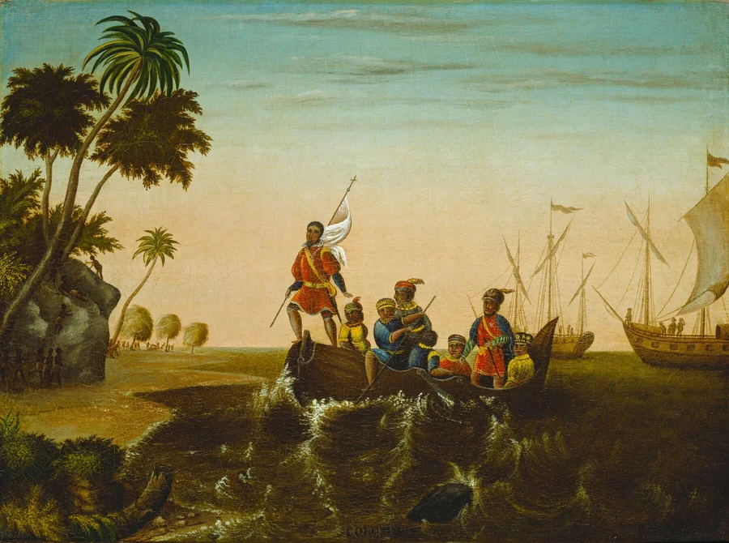

American History · Chapter lesson
Atlantic contact, exchange, and conquest
Read a short illustrated account, examine primary sources, and discuss the evidence.
1492–1607
Atlantic contact, exchange, and conquest
In 1492, Christopher Columbus’s expedition reached the Caribbean, where Taíno people already lived. His voyages helped begin sustained connections between Europe and the Americas. They were not the beginning of American history, and Columbus did not land in the territory of the future continental United States.
Plants, animals, people, and diseases crossed the Atlantic in what historians call the Columbian Exchange. Crops such as maize and potatoes reshaped diets abroad; introduced diseases devastated many Indigenous communities. Spanish conquest and colonization involved warfare, forced labor, and resistance. European empires also expanded the forced transportation of enslaved Africans to the Americas.
Discuss: Why can “exchange” describe movement across the ocean without meaning that everyone benefited equally?
Library of Congress: Columbus and the Taíno →